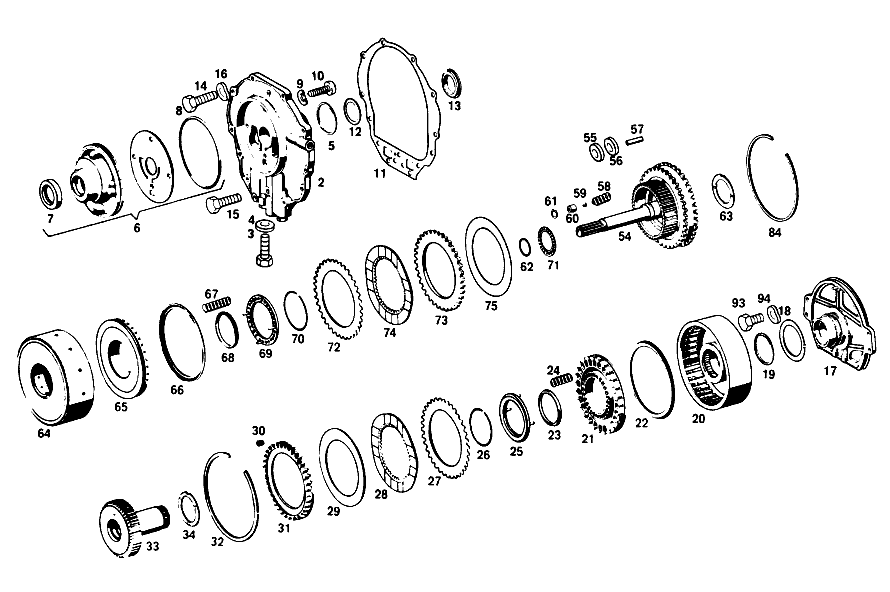

| № | Артикул | Название | Кол. | Примечание | Ограничение |
|---|---|---|---|---|---|
| 366 | A 115 270 08 90 | - Корпус | 1 | ||
| 367 | A 112 277 43 50 | - втулка | 1 | ||
| 368 | A 008 997 91 46 | - Уплотнительное кольцо | 1 | ||
| 369 | A 115 277 03 14 | - ПЛАСТИНА ПРОМЕЖУТОЧНАЯ | 1 | ||
| 369B | A 004 997 05 48 | - Уплотнительное кольцо | 1 | ||
| 369B | A 004 997 05 48 | - Уплотнительное кольцо | 1 | ||
| 370 | N 000931 008046 | - Винт | - | ||
| 370 | N 304017 008018 | - Винт с 6-гранной головкой | 4 | M8X35 | |
| 371 | N 000137 008204 | - Пружинная шайба | - | ||
| 371 | N 000137 008212 | - Пружинная шайба | 4 | ||
| 372 | N 000625 016008 | - Шарикоподшипник | 1 | [402] БОЛЬШЕ НЕ ПОСТАВЛЯЕТСЯ | |
| 373 | A 115 270 21 50 | - втулка | 1 | ||
| 373B | A 115 272 06 55 | - УПЛОТНИТ. КОЛЬЦО | - | ||
| 373B | A 316 272 04 55 | - Уплотнительное кольцо | 4 | [402] БОЛЬШЕ НЕ ПОСТАВЛЯЕТСЯ | |
| 374 | A 115 272 07 92 | - Резиновый наконечник | 1 | ||
| 375 | A 109 270 40 20 | - ФЛАНЕЦ | 1 | [402] БОЛЬШЕ НЕ ПОСТАВЛЯЕТСЯ | |
| 376 | A 094 990 45 07 | - Шар | 2 | ||
| 377 | A 109 272 09 31 | - ПОРШЕНЬ | 1 | ||
| 377B | A 109 272 00 92 | - МАНЖЕТА | - | [414] СТАРУЮ ДЕТАЛЬ УСТАНАВЛИВАТЬ БОЛЬШЕ НЕ РАЗРЕШАЕТСЯ | |
| 377B | A 316 272 08 92 | - Манжета | 1 | ||
| 377E | A 115 272 14 92 | - Уплотнительное кольцо | 1 | ||
| 378 | A 109 993 10 03 | - ПРУЖИНА | 28 | [402] БОЛЬШЕ НЕ ПОСТАВЛЯЕТСЯ | |
| 379 | A 109 270 03 41 | - ДЕРЖАТЕЛЬ | 1 | [402] БОЛЬШЕ НЕ ПОСТАВЛЯЕТСЯ | |
| 380 | A 115 994 08 35 | - Пруж. стопорное кольцо | 1 | ||
| 381 | A 115 272 14 07 | - СОЛНЕЧНАЯ ШЕСТЕРНЯ | - | [402] БОЛЬШЕ НЕ ПОСТАВЛЯЕТСЯ [032] NO LONGER AVAILABLE INDIVIDUALLY, BUT ONLY IN RANGE OF DELIVERY OF CENTRAL PLANETARY GEAR TRAIN | |
| 382 | A 000 994 14 40 | - Пруж. стопорное кольцо | 1 | ||
| 383 | A 006 981 42 10 | - ПОДШИПНИК ИГОЛЬЧАТЫЙ | 1 | ||
| 384 | A 112 272 02 25 | - Диск | 4 | ||
| 385 | A 109 272 15 26 | - Диск | 1 | ||
| 386 | A 109 272 23 26 | Диск | 3 | ||
| 387 | A 109 272 19 26 | Диск | 1 | ||
| 388 | A 115 272 12 73 | - Кольцо | 1 | ||
| 389 | A 112 272 14 62 | - Диск | 1 | 0.6 MM [036] 024,025 UP TO TRANSMISSION 014358; 026,027 UP TO TRANSMISSION 006125 | |
| 390 | A 109 272 03 51 | - ДИСТАНЦИОННОЕ КОЛЬЦО | 1 | ||
| 391 | A 109 270 21 43 | - ВОДИЛО ПЛАНЕТ. ПЕРЕДАЧИ | 1 | ||
| 392 | A 115 272 04 06 | - ПЛАНЕТАРНАЯ ШЕСТЕРНЯ | - | [402] БОЛЬШЕ НЕ ПОСТАВЛЯЕТСЯ | |
| 393 | A 000 981 47 87 | - ИГЛА | - | [402] БОЛЬШЕ НЕ ПОСТАВЛЯЕТСЯ | |
| 394 | A 115 272 39 62 | - УПОРНАЯ ШАЙБА | - | [402] БОЛЬШЕ НЕ ПОСТАВЛЯЕТСЯ | |
| 395 | A 115 272 38 62 | - УПОРНАЯ ШАЙБА | - | [402] БОЛЬШЕ НЕ ПОСТАВЛЯЕТСЯ | |
| 396 | A 115 272 10 74 | - БОЛТ | - | [402] БОЛЬШЕ НЕ ПОСТАВЛЯЕТСЯ | |
| 397 | A 004 981 21 10 | - ПОДШИПНИК ИГОЛЬЧАТЫЙ | - | ||
| 397 | A 000 981 14 11 | - Игольчатый подшипник | 1 | ||
| 398 | A 115 272 49 62 | - Диск | 1 | ||
| 399 | A 115 272 10 08 | - ЭПИЦИКЛ. ШЕСТЕРНЯ | - | [402] БОЛЬШЕ НЕ ПОСТАВЛЯЕТСЯ [032] NO LONGER AVAILABLE INDIVIDUALLY, BUT ONLY IN RANGE OF DELIVERY OF CENTRAL PLANETARY GEAR TRAIN | |
| 400 | A 109 272 00 08 | - ЭПИЦИКЛ. ШЕСТЕРНЯ | - | [402] БОЛЬШЕ НЕ ПОСТАВЛЯЕТСЯ [033] NO LONGER AVAILABLE INDIVIDUALLY, BUT ONLY IN RANGE OF DELIVERY OF FRONT PLANETARY GEAR TRAIN | |
| 401 | A 115 272 02 73 | - Кольцо | 1 | ||
| 402 | A 112 994 07 35 | - Пруж. стопорное кольцо | 1 | ||
| 403 | A 115 272 34 62 | - Упорная шайба | 1 | ||
| 404 | A 115 271 17 52 | - Компенсационная шайба | 1 | ПО НЕОБХОДИМОСТИ 0.1 MM | |
| 404 | A 115 271 18 52 | - Компенсационная шайба | 1 | ПО НЕОБХОДИМОСТИ 0.2 MM | |
| 404 | A 115 271 19 52 | - Дистанционная шайба | 1 | ПО НЕОБХОДИМОСТИ 0.5mm [402] БОЛЬШЕ НЕ ПОСТАВЛЯЕТСЯ | |
| 405 | A 115 271 21 52 | - Компенсационная шайба | 1 | ПО НЕОБХОДИМОСТИ 0.1 MM | |
| 406 | A 109 270 11 43 | - ВОДИЛО ПЛАНЕТ. ПЕРЕДАЧИ | - | ||
| 406 | A 109 270 20 43 | - ВОДИЛО ПЛАНЕТ. ПЕРЕДАЧИ | 1 | ||
| 407 | A 115 272 04 06 | - ПЛАНЕТАРНАЯ ШЕСТЕРНЯ | - | [402] БОЛЬШЕ НЕ ПОСТАВЛЯЕТСЯ | |
| 408 | A 000 981 47 87 | - ИГЛА | - | [402] БОЛЬШЕ НЕ ПОСТАВЛЯЕТСЯ | |
| 409 | A 115 272 39 62 | - УПОРНАЯ ШАЙБА | - | [402] БОЛЬШЕ НЕ ПОСТАВЛЯЕТСЯ | |
| 410 | A 115 272 38 62 | - УПОРНАЯ ШАЙБА | - | [402] БОЛЬШЕ НЕ ПОСТАВЛЯЕТСЯ | |
| 411 | A 115 270 10 74 | - БОЛТ | - | [402] БОЛЬШЕ НЕ ПОСТАВЛЯЕТСЯ | |
| 412 | A 109 270 09 25 | - ПРИВОДНОЙ ВАЛ | - | ||
| 412 | A 109 270 20 25 | - ПРИВОДНОЙ ВАЛ | 1 | ||
| 413 | A 115 272 04 73 | - Кольцо | 1 | ||
| 414 | A 115 272 33 45 | ФЛАНЕЦ | 1 | [402] БОЛЬШЕ НЕ ПОСТАВЛЯЕТСЯ | |
| 415 | A 109 272 13 31 | - ПОРШЕНЬ | 1 | ||
| 415B | A 109 272 03 92 | - МАНЖЕТА | 1 | ||
| 415E | A 109 272 04 92 | Уплотнительное кольцо | 1 | ||
| 416 | A 115 993 41 03 | - Нажимная пружина | 24 | ||
| 418 | A 109 272 02 67 | Направляющее кольцо | 1 | ||
| 419 | A 109 272 00 62 | - УПОРНАЯ ШАЙБА | - | [402] БОЛЬШЕ НЕ ПОСТАВЛЯЕТСЯ | |
| 421 | A 115 272 54 24 | - ОБОЙМА ФРИКЦ. ДИСКОВ | 1 | [402] БОЛЬШЕ НЕ ПОСТАВЛЯЕТСЯ | |
| 422 | A 115 272 04 73 | - Кольцо | 1 | ||
| 423 | A 112 272 02 25 | - Диск | 4 | ||
| 424 | A 109 272 21 26 | - Диск | 1 | ||
| 425 | A 109 272 23 26 | - Диск | 3 | ||
| 426 | A 115 272 13 73 | - Кольцо | 2 | ||
| 427 | A 002 981 31 10 | - Игольчатый подшипник | 1 | [402] БОЛЬШЕ НЕ ПОСТАВЛЯЕТСЯ | |
| 428 | A 109 270 08 25 | - ПРИВОДНОЙ ВАЛ | 1 | [402] БОЛЬШЕ НЕ ПОСТАВЛЯЕТСЯ | |
| 429 | A 002 981 32 10 | - Сепаратор иг. подшипника | 1 | ||
| 430 | A 115 272 34 62 | - Упорная шайба | 1 | ||
| 431 | A 115 272 02 73 | - Кольцо | 1 | ||
| 432 | A 112 994 07 35 | - Пруж. стопорное кольцо | 1 | ||
| 433 | N 000471 030000 | - Стопорное кольцо | 1 | [042] 024,025 UP TO TRANSMISSION 041012; 026,027 UP TO TRANSMISSION 012506 | |
| 434 | A 005 981 81 10 | - Сепаратор иг. подшипника | 1 | ||
| 435 | A 002 981 30 10 | - Игольчатый подшипник | 1 | ||
| 436 | A 109 270 19 25 | - ПРИВОДНОЙ ВАЛ | 1 | [402] БОЛЬШЕ НЕ ПОСТАВЛЯЕТСЯ | |
| 437 | A 109 270 16 43 | - ВОДИЛО ПЛАНЕТ. ПЕРЕДАЧИ | 1 | ||
| 438 | A 100 272 04 06 | - ПЛАНЕТАРНАЯ ШЕСТЕРНЯ | - | [402] БОЛЬШЕ НЕ ПОСТАВЛЯЕТСЯ | |
| 439 | A 000 981 55 87 | - ИГЛА | - | [402] БОЛЬШЕ НЕ ПОСТАВЛЯЕТСЯ | |
| 440 | A 100 272 26 62 | - УПОРНАЯ ШАЙБА | - | [402] БОЛЬШЕ НЕ ПОСТАВЛЯЕТСЯ | |
| 441 | A 100 272 27 62 | - УПОРНАЯ ШАЙБА | - | [402] БОЛЬШЕ НЕ ПОСТАВЛЯЕТСЯ | |
| 442 | A 100 272 16 74 | - БОЛТ | - | [402] БОЛЬШЕ НЕ ПОСТАВЛЯЕТСЯ | |
| 443 | A 109 272 00 08 | - ЭПИЦИКЛ. ШЕСТЕРНЯ | - | [402] БОЛЬШЕ НЕ ПОСТАВЛЯЕТСЯ [034] NO LONGER AVAILABLE INDIVIDUALLY, BUT ONLY IN RANGE OF DELIVERY OF REAR PLANETARY GEAR TRAIN | |
| 444 | A 007 981 39 10 | - Игольчатый подшипник | 1 | ||
| 445 | A 004 981 40 10 | - Сепаратор иг. подшипника | 1 | ||
| 446 | A 115 272 37 62 | - Упорная шайба | 1 | ||
| 447 | A 001 981 18 25 | - Рад. шарикоподшипник | 1 | ||
| 448 | A 115 272 49 62 | Диск | 1 | ||
| 449 | A 002 981 88 10 | - ПОДШИПНИК ИГОЛЬЧАТЫЙ | 1 | ||
| 450 | A 115 272 47 62 | - УПОРНАЯ ШАЙБА | 1 | [402] БОЛЬШЕ НЕ ПОСТАВЛЯЕТСЯ | |
| 450B | A 307 272 05 55 | - Уплотнительное кольцо | 1 | ||
| 451 | A 115 272 30 45 | - ФЛАНЕЦ | 1 | ||
| 452 | N 007987 006108 | - БОЛТ | 3 | ||
| 453 | A 115 271 13 52 | - Компенсационная шайба | 1 | ПО НЕОБХОДИМОСТИ 0.1 MM | |
| 454 | A 000 304 05 90 | - ПЕРЕКЛ.МАГНИТ | - | [412] БОЛЬШЕ НЕ ПОСТАВЛЯЕТСЯ, ЗАКАЗЫВАТЬ ОТДЕЛЬНЫЕ ДЕТАЛИ [051] NO LONGER AVAILABLE;INSTEAD;1 COIL 000 304 07 90,KICK-DOWN VALVE 000 304 06 90 | |
| 455 | A 010 997 77 45 | - Уплотнительное кольцо | 1 | ||
| 456 | A 007 997 96 45 | - Уплотнительное кольцо | 1 | ||
| 457 | A 007 997 80 45 | - Уплотнительное кольцо | 1 | ||
| 458 | A 115 304 01 60 | - Уплотнительное кольцо | 1 | ||
| 459 | A 115 270 60 11 | - КОРПУС КП | - | [055] FROM TRANSMISSION 006125 ALSO INSTALLED ON 006001-006035 | |
| 459 | A 115 270 77 11 | - КОРПУС КП | 1 | ||
| 461 | A 115 997 06 30 | - Резьбовая пробка | 1 | ||
| 462 | N 007603 008105 | - Уплотнительное кольцо | 1 | ||
| 462B | A 115 272 11 92 | - Уплотнительное кольцо | 1 | BRAKE BAND PISTON 2 | |
| 463 | A 110 997 03 30 | - Резьбовая пробка | 1 | ||
| 464 | N 007603 012405 | - Уплотнительное кольцо | 1 | ||
| 465 | A 006 997 61 46 | - Уплотнительное кольцо | 2 | ||
| 466 | A 115 277 07 05 | - КОРПУС | 1 | ||
| 467 | A 115 993 20 10 | - пружина | 2 | [402] БОЛЬШЕ НЕ ПОСТАВЛЯЕТСЯ | |
| 468 | N 000931 006115 | - Винт | - | ||
| 468 | N 000933 006151 | - Винт | 3 | ||
| 469 | N 000137 006204 | - Пружинная шайба | 3 | ||
| 470 | A 000 545 33 06 | - Переключатель | 1 | STARTER NON\-REPEAT AND BACK\-UP LIGHT | |
| 471 | A 115 997 07 40 | - Уплотнительное кольцо | 1 | ||
| 472 | N 000137 005203 | - Пружинная шайба | 3 | ||
| 473 | N 000084 005174 | - Винт | 3 | ||
| 474 | A 115 278 16 20 | - РЫЧАГ | 1 | ||
| 475 | A 115 278 09 10 | - ВАЛ РЕГУЛЯТОРА | 1 | [402] БОЛЬШЕ НЕ ПОСТАВЛЯЕТСЯ | |
| 476 | A 115 278 09 50 | - втулка | 1 | ||
| 477 | A 115 278 01 53 | - РАСПОРН. ТРУБКА | 1 | [402] БОЛЬШЕ НЕ ПОСТАВЛЯЕТСЯ | |
| 478 | A 004 997 37 45 | - Уплотнительное кольцо | 1 | ||
| 479 | N 000084 004139 | - Винт | 1 | ||
| 480 | N 009021 004202 | - Шайба | - | ||
| 480 | A 094 990 63 08 | - Шайба | 1 | ||
| 481 | N 000137 004202 | - Пружинная шайба | 1 | ||
| 482 | A 115 270 01 57 | - Пластина фиксации сел.АКП | 1 | ||
| 483 | N 006912 006006 | - Винт | 1 | ||
| 484 | N 000137 006204 | - Пружинная шайба | 1 | ||
| 485 | A 109 278 00 20 | - РЫЧАГ | 1 | Рулевое управление: ВправоАвтоматическая коробка переключения передач [402] БОЛЬШЕ НЕ ПОСТАВЛЯЕТСЯ | |
| 487 | A 109 270 10 89 | Нажимной элемент | 1 | ||
| 488 | A 115 270 20 89 | - КЛАПАН | 1 | [402] БОЛЬШЕ НЕ ПОСТАВЛЯЕТСЯ | |
| 489 | A 016 997 34 48 | Кольцевая прокладка | 2 | ||
| 490 | A 115 993 00 22 | - пружина | 1 | [402] БОЛЬШЕ НЕ ПОСТАВЛЯЕТСЯ | |
| 491 | A 109 277 01 75 | - Нажимной штифт | 2 | ПО НЕОБХОДИМОСТИ 22 MM | |
| 493 | A 115 277 02 74 | - Палец | 1 | ||
| 494 | A 115 277 04 24 | - РЫЧАГ | 1 | ||
| 495 | A 115 277 53 75 | - Нажимной штифт | 2 | ||
| 496 | A 115 993 02 25 | - пружина | 1 | ||
| 497 | A 115 277 17 71 | - болт | 1 | ||
| 498 | A 115 990 04 51 | - гайка | 1 | ||
| 499 | A 115 270 61 32 | - Поршень | 1 | ||
| 499B | A 115 272 08 92 | - Уплотнительное кольцо | 1 | ||
| 500 | A 115 993 09 02 | - ПРУЖИНА | - | [402] БОЛЬШЕ НЕ ПОСТАВЛЯЕТСЯ | |
| 501 | A 115 277 48 75 | - ШТИФТ | - | [402] БОЛЬШЕ НЕ ПОСТАВЛЯЕТСЯ | |
| 502 | A 115 994 17 35 | - Пруж. стопорное кольцо | 1 | ||
| 503 | A 115 993 18 05 | - пружина | 1 | [402] БОЛЬШЕ НЕ ПОСТАВЛЯЕТСЯ | |
| 504 | A 115 277 16 03 | - КРЫШКА | 1 | [402] БОЛЬШЕ НЕ ПОСТАВЛЯЕТСЯ | |
| 505 | A 008 997 35 45 | - Уплотнительное кольцо | 1 | ||
| 506 | A 115 994 04 35 | - Пруж. стопорное кольцо | 1 | ||
| 507 | A 115 270 06 59 | - РЫЧАГ | 1 | ||
| 508 | A 115 990 17 40 | - Диск | 1 | ||
| 509 | N 006799 009002 | - Стопорная шайба | 1 | ||
| 510 | A 115 270 08 59 | - Рычаг | 1 | ||
| 511 | A 116 270 03 62 | - ЛЕНТА ТОРМОЗНАЯ | - | ||
| 511 | A 116 270 17 62 | - Тормозная лента | 1 | ||
| 514B | A 115 272 03 92 | - Уплотнительное кольцо | 1 | ||
| 515 | A 115 270 42 32 | - ПОРШЕНЬ | 1 | ||
| 515B | A 100 277 02 92 | - Уплотнительное кольцо | 1 | ||
| 516 | A 007 997 80 45 | - Уплотнительное кольцо | 1 | ||
| 517 | A 115 270 12 08 | - КРЫШКА | 1 | [054] UP TO TRANSMISSION 006124 EXCEPT FOR 006001-006035 | |
| 518 | A 006 997 31 46 | - Уплотнительное кольцо | 1 | ||
| 519 | A 004 997 69 45 | - УПЛОТНИТ. КОЛЬЦО | 1 | [054] UP TO TRANSMISSION 006124 EXCEPT FOR 006001-006035 | |
| 520 | A 115 277 26 03 | - КРЫШКА | 1 | [054] UP TO TRANSMISSION 006124 EXCEPT FOR 006001-006035 | |
| 521 | N 912009 043200 | - СТОПОРН. КОЛЬЦО | 1 | [054] UP TO TRANSMISSION 006124 EXCEPT FOR 006001-006035 | |
| 522 | A 010 997 59 45 | - Уплотнительное кольцо | 1 | ||
| 523 | A 115 994 14 35 | - Пруж. стопорное кольцо | 1 | ||
| 524 | A 109 270 34 32 | - ПОРШЕНЬ | - | ||
| 524 | A 115 270 62 32 | - ПОРШЕНЬ | 1 | ||
| 524B | A 115 277 02 55 | - Уплотнительное кольцо | 1 | ||
| 525 | A 008 997 35 45 | - Уплотнительное кольцо | 1 | ||
| 526 | A 100 277 26 75 | - ВИЛКА НАЖИМНАЯ | 1 | ||
| 527 | A 115 270 05 08 | - КРЫШКА | - | ||
| 527 | A 109 270 04 08 | - КРЫШКА | 1 | ||
| 528 | A 115 994 04 35 | - Пруж. стопорное кольцо | 1 | ||
| 529 | A 115 270 56 62 | - ЛЕНТА ТОРМОЗНАЯ | - | ||
| 529 | A 115 270 69 62 | - Тормозная лента | 1 | ||
| 530 | A 100 270 35 62 | - ЛЕНТА ТОРМОЗНАЯ | - | ||
| 531 | N 000137 008204 | - Пружинная шайба | - | ||
| 531 | N 000137 008212 | - Пружинная шайба | 11 | ||
| 532 | N 000931 008244 | - Винт | 11 | ||
| 533 | A 115 277 26 80 | - ПРОКЛАДКА УПЛОТНИТЕЛЬНАЯ | - | ||
| 533 | A 115 277 33 80 | - Уплотнение | 1 | ||
| 534 | A 115 272 01 17 | - Шестерня | - | ||
| 534 | A 722 272 00 17 | - ШЕСТЕРНЯ | 1 | [402] БОЛЬШЕ НЕ ПОСТАВЛЯЕТСЯ | |
| 535 | A 115 278 07 74 | - Палец | 1 | ||
| 536 | A 000 994 42 41 | - Стопорное кольцо | 1 | ||
| 537 | A 115 993 02 22 | - пружина | 1 | ||
| 538 | A 115 278 02 21 | - Собачка | 1 | ||
| 539 | A 115 270 10 65 | - ТЯГИ | - | [415] ПРИМЕЧ. ПО ЗАМЕНЕ ПРИМЕНИМО ТОЛЬКО ДЛЯ СТОЯЩИХ РЯДОМ ПОЗИЦИЙ | |
| 539 | A 115 270 06 65 | - Тяга | 1 | ||
| 540 | A 115 278 05 17 | - Ролик | 1 | ||
| 541 | A 115 278 08 74 | - Палец | 1 | ||
| 542 | A 115 278 00 62 | - Упорная шайба | 1 | ||
| 543 | A 000 981 51 87 | - Игла подшипника | 23 | ||
| 544 | A 115 278 04 17 | - Ролик | 1 | ||
| 545 | A 094 990 61 07 | - Стопорная шайба | 1 | ||
| 546 | A 115 990 21 40 | - ШАЙБА | 1 | ||
| 547 | A 115 270 04 78 | - Листовая рессора | 1 | ||
| 548 | A 115 278 04 40 | - Держатель | 1 | ||
| 549 | N 000137 006204 | - Пружинная шайба | 1 | ||
| 550 | N 000933 006183 | - БОЛТ | - | ||
| 550 | N 304017 006016 | - Винт с 6-гранной головкой | 1 | M6X16 | |
| 551 | A 115 270 19 74 | РЕГУЛЯТОР | 1 | [055] FROM TRANSMISSION 006125 ALSO INSTALLED ON 006001-006035 | |
| 552 | A 115 270 00 98 | - Масляный фильтр | 3 | ||
| 552B | A 115 272 03 55 | - УПЛОТНИТ. КОЛЬЦО | 3 | ||
| 552B | A 115 272 13 55 | - Уплотнительное кольцо | 3 | ||
| 553 | A 115 270 03 42 | - Ведущее колесо | 1 | [061] 024,025 FROM TRANSMISSION 036476; 026,027 FROM TRANSMISSION 007711 | |
| 554 | A 115 993 04 26 | - Тарельчатая пружина | 1 | [062] 024,025 FROM TRANSMISSION 026926 | |
| 556 | A 115 270 49 11 | - КОРПУС КП | 1 | [064] 026,027 FROM TRANSMISSION 007711 | |
| 557 | A 094 990 46 07 | - Шар | 2 | 6 MM; 6,0 MM | |
| 558 | N 005401 308000 | - Шар | 2 | 8 MM | |
| 559 | A 115 991 02 41 | - РАЗГРУЗ.ВТУЛКА | 1 | [402] БОЛЬШЕ НЕ ПОСТАВЛЯЕТСЯ | |
| 560 | N 000007 012219 | - Цилиндрический штифт | 1 | ||
| 561 | A 115 997 01 03 | - Пробка | 1 | [066] 024,025 FROM TRANSMISSION 009387 | |
| 562 | A 115 997 03 03 | - Пробка | 1 | [067] 024,025 FROM TRANSMISSION 027791; 026,027 FROM TRANSMISSION 002184 | |
| 563 | N 007603 010100 | - Уплотнительное кольцо | 1 | 10X13.5 AL | |
| 564 | A 115 997 01 30 | - ЗАГЛУШКА РЕЗЬБОВАЯ | 1 | [402] БОЛЬШЕ НЕ ПОСТАВЛЯЕТСЯ | |
| 565 | A 000 981 81 85 | - Шар | 1 | ||
| 566 | A 115 993 38 03 | - Нажимная пружина | 1 | [066] 024,025 FROM TRANSMISSION 009387 | |
| 567 | A 115 277 62 75 | - Нажимной штифт | 1 | [066] 024,025 FROM TRANSMISSION 009387 | |
| 568 | N 007603 012102 | - Уплотнительное кольцо | 1 | ||
| 569 | N 007604 012102 | - Резьбовая пробка | 1 | ||
| 569 | N 007604 012105 | - Резьбовая пробка | 1 | M12X1,5 | |
| 570 | N 007603 008105 | - Уплотнительное кольцо | 2 | ||
| 571 | A 115 997 06 30 | - Резьбовая пробка | 2 | ||
| 572 | A 115 270 03 27 | - Ведущее колесо | 1 | [061] 024,025 FROM TRANSMISSION 036476; 026,027 FROM TRANSMISSION 007711 | |
| 573 | A 115 274 06 28 | - Корпус | 1 | [061] 024,025 FROM TRANSMISSION 036476; 026,027 FROM TRANSMISSION 007711 | |
| 574 | A 005 997 52 45 | - Уплотнительное кольцо | 1 | ||
| 574B | A 115 274 00 60 | - УПЛОТНИТ. КОЛЬЦО | 1 | [402] БОЛЬШЕ НЕ ПОСТАВЛЯЕТСЯ | |
| 575 | A 114 991 01 29 | - Шар | 1 | ||
| 576 | A 115 993 13 02 | - пружина | 1 | [402] БОЛЬШЕ НЕ ПОСТАВЛЯЕТСЯ | |
| 577 | N 007603 018100 | - Уплотнительное кольцо | 1 | ||
| 578 | A 115 997 03 30 | - Резьбовая пробка | 1 | ||
| 579 | A 115 270 51 32 | - Поршень | 1 | ||
| 580 | N 000137 006204 | - Пружинная шайба | 2 | ||
| 581 | A 115 277 16 71 | - болт | 1 | ||
| 583 | N 000625 900201 | - Шарикоподшипник | 1 | ||
| 584 | N 000472 062000 | - Стопорное кольцо | - | ||
| 584 | A 003 994 52 41 | - предохранитель | 1 | ||
| 585 | A 008 997 92 46 | - Сальник | 1 | ||
| 586 | A 115 993 34 04 | - пружина | 1 | [402] БОЛЬШЕ НЕ ПОСТАВЛЯЕТСЯ | |
| 587 | A 115 277 41 31 | - Поршень | 1 | ||
| 588 | A 115 277 27 40 | - ДЕРЖАТЕЛЬ | 1 | ||
| 589 | N 000137 005203 | - Пружинная шайба | 1 | ||
| 590 | N 007985 005175 | - Винт | 1 | M5X16 | |
| 590B | A 109 271 00 80 | - ПРОКЛАДКА УПЛОТНИТЕЛЬНАЯ | - | ||
| 590B | A 109 271 01 80 | - уплотнение | 1 | ||
| 591 | N 000137 008204 | - Пружинная шайба | - | ||
| 591 | N 000137 008212 | - Пружинная шайба | 10 | ||
| 592 | N 000931 008046 | - Винт | - | ||
| 592 | N 304017 008018 | - Винт с 6-гранной головкой | 10 | M8X35 | |
| 593 | A 115 277 22 03 | - КРЫШКА | 1 | ||
| 594 | A 115 993 01 03 | - Нажимная пружина | 1 | ||
| 595 | A 115 993 02 03 | - ПРУЖИНА | 1 | [402] БОЛЬШЕ НЕ ПОСТАВЛЯЕТСЯ | |
| 596 | A 115 277 47 38 | - ПОРШЕНЬ | 1 | ||
| 597 | A 115 277 43 31 | - ПОРШЕНЬ | 1 | ||
| 598 | A 115 262 11 45 | - Фланец | 1 | ||
| 599 | A 123 990 00 60 | - гайка | 1 | ||
| 600 | A 000 270 01 79 | - Вакуумная камера | 1 | ||
| 601 | A 115 277 29 75 | - Нажимной штифт | 1 | ПО НЕОБХОДИМОСТИ 39.65 MM | |
| 602 | A 115 993 72 02 | - Нажимная пружина | 1 | [071] 024,025 UP TO TRANSMISSION 033076; 026,027 UP TO TRANSMISSION 002853 | |
| 603 | A 115 993 84 02 | - пружина | 1 | [402] БОЛЬШЕ НЕ ПОСТАВЛЯЕТСЯ | |
| 604 | A 115 270 06 72 | - Пробка | 1 | ||
| 605 | A 006 997 41 45 | - Уплотнительное кольцо | - | ||
| 605 | A 007 997 14 48 | - Уплотнительное кольцо | - | ||
| 605 | A 018 997 19 48 | - Кольцевая прокладка | 1 | ||
| 606 | A 115 277 08 58 | - Эксцентриковая шайба | 1 | ||
| 607 | A 109 270 29 07 | - Корпус перекл. золотника | 1 | [697] ДЕТАЛЬ ПОСТАВЛЯЕТСЯ ТОЛЬКО/ИЛИ ТАКЖЕ КАК ЗАП.ЧАСТЬ [055] FROM TRANSMISSION 006125 ALSO INSTALLED ON 006001-006035 | |
| 609 | A 100 277 08 80 | ПРОКЛАДКА УПЛОТНИТЕЛЬНАЯ | 1 | [402] БОЛЬШЕ НЕ ПОСТАВЛЯЕТСЯ [055] FROM TRANSMISSION 006125 ALSO INSTALLED ON 006001-006035 | |
| 611 | A 115 277 11 14 | ПЛАСТИНА ПРОМЕЖУТОЧНАЯ | 1 | [055] FROM TRANSMISSION 006125 ALSO INSTALLED ON 006001-006035 | |
| 611B | A 115 277 12 80 | - ПРОКЛАДКА УПЛОТНИТЕЛЬНАЯ | - | ||
| 611B | A 115 277 32 80 | - Уплотнение | 1 | ||
| 612 | A 115 277 08 83 | - ЩИТОК ЗАКРЫВ. | 1 | [402] БОЛЬШЕ НЕ ПОСТАВЛЯЕТСЯ | |
| 613 | N 005401 305500 | - Шар | 2 | ||
| 614 | A 109 270 30 07 | - КОРПУС ЗОЛОТНИКА | - | [402] БОЛЬШЕ НЕ ПОСТАВЛЯЕТСЯ [055] FROM TRANSMISSION 006125 ALSO INSTALLED ON 006001-006035 | |
| 618 | A 116 277 01 83 | - ЩИТОК ЗАКРЫВ. | 1 | [402] БОЛЬШЕ НЕ ПОСТАВЛЯЕТСЯ | |
| 619 | A 116 277 00 83 | ЩИТОК ЗАКРЫВ. | 1 | [402] БОЛЬШЕ НЕ ПОСТАВЛЯЕТСЯ [055] FROM TRANSMISSION 006125 ALSO INSTALLED ON 006001-006035 | |
| 621 | N 005401 305500 | - Шар | 6 | ||
| 622 | A 115 991 01 60 | - ШТИФТ | 1 | ||
| 623 | A 115 277 17 14 | ПЛАСТИНА ПРОМЕЖУТОЧНАЯ | 1 | [402] БОЛЬШЕ НЕ ПОСТАВЛЯЕТСЯ | |
| 624 | A 109 270 13 07 | - КОРПУС ЗОЛОТНИКА | - | [402] БОЛЬШЕ НЕ ПОСТАВЛЯЕТСЯ [055] FROM TRANSMISSION 006125 ALSO INSTALLED ON 006001-006035 | |
| 625 | A 115 277 11 83 | - ЩИТОК ЗАКРЫВ. | 1 | [402] БОЛЬШЕ НЕ ПОСТАВЛЯЕТСЯ [079] 024,025 FROM TRANSMISSION 052411; 026,027 FROM TRANSMISSION 025503 | |
| 625H | A 115 277 18 80 | - ПРОКЛАДКА УПЛОТНИТЕЛЬНАЯ | - | ||
| 625H | A 115 277 28 80 | - уплотнение | 1 | [079] 024,025 FROM TRANSMISSION 052411; 026,027 FROM TRANSMISSION 025503 | |
| 626 | A 094 990 26 05 | - Винт | 3 | ||
| 628 | A 115 277 06 74 | - БОЛТ | 6 | [402] БОЛЬШЕ НЕ ПОСТАВЛЯЕТСЯ | |
| 629 | A 115 277 06 73 | - предохранитель | 6 | ||
| 630 | N 005401 305500 | - Шар | 1 | ||
| 631 | A 115 993 97 03 | - пружина | 1 | [402] БОЛЬШЕ НЕ ПОСТАВЛЯЕТСЯ | |
| 632 | N 005401 307000 | Шар | 2 | 7 MM | |
| 633 | N 000137 006204 | - Пружинная шайба | 12 | ||
| 634 | N 000931 006911 | - БОЛТ | 10 | ||
| 635 | N 000931 006055 | - Винт | 2 | ||
| 636 | N 900421 006001 | - Резьбовая вставка | NB | ||
| 637 | A 115 270 10 68 | - Вставная трубка | 2 | ||
| 637B | A 115 277 33 50 | - втулка | 4 | ||
| 638 | N 000137 008204 | - Пружинная шайба | - | ||
| 638 | N 000137 008212 | - Пружинная шайба | 11 | ||
| 639 | N 000933 008153 | - Винт | - | M8X25\-8.8 | |
| 639 | N 304017 008034 | - Винт с 6-гранной головкой | 5 | M8X25 | |
| 640 | N 000933 008152 | - Винт | - | ||
| 640 | N 304017 008027 | - Винт с 6-гранной головкой | 6 | ||
| 642 | A 109 277 02 53 | - втулка | 2 | ||
| 643 | N 000084 005108 | Винт | 2 | ||
| 644 | N 000137 005203 | - Пружинная шайба | 2 | ||
| 645 | A 115 270 01 12 | - Поддон масляный | 1 | ||
| 646 | A 115 271 15 80 | - ПРОКЛАДКА УПЛОТНИТЕЛЬНАЯ | 1 | ||
| 647 | N 000933 008153 | - Винт | - | M8X25\-8.8 | |
| 647 | N 304017 008034 | - Винт с 6-гранной головкой | 4 | M8X25 | |
| 648 | N 000125 008407 | - ШАЙБА | 4 | ||
| 649 | A 115 271 01 94 | - Прокладка | 4 | ||
| 650 | A 109 270 00 80 | КОМПЛЕКТ УПЛОТНЕНИЙ | - | ||
| 650 | A 109 270 25 01 | набор уплотнений | 1 | КОРОБКА ПЕРЕДАЧ [412] БОЛЬШЕ НЕ ПОСТАВЛЯЕТСЯ, ЗАКАЗЫВАТЬ ОТДЕЛЬНЫЕ ДЕТАЛИ | |
| 651 | A 115 270 21 01 | набор уплотнений | 1 | [055] FROM TRANSMISSION 006125 ALSO INSTALLED ON 006001-006035 | |
| 652 | N 000933 008325 | Винт | - | ||
| 652 | A 124 990 21 01 | болт | 6 | ||
| 653 | N 000137 008200 | Пружинная шайба | 6 | ||
| 657 | A 116 270 00 83 | Маслоизмерительный щуп | 1 | ||
| 658 | N 915036 010204 | Полый болт | - | ||
| 658 | N 915036 010108 | Полый болт | 1 | ||
| 659 | N 007603 014104 | Уплотнительное кольцо | 2 | ||
| 660 | N 000933 008145 | Винт | 1 | M8 X 18 | |
| 661 | N 912004 008102 | Пружинное кольцо | 1 | ||
| 662 | A 123 270 13 47 | Провод | 1 | ||
| 663 | N 915036 006102 | Полый болт | 1 | ||
| 664 | N 007603 010100 | Уплотнительное кольцо | 2 | 10X13.5 AL | |
| 665 | A 112 997 03 81 | втулка | 1 | ||
| 666 | A 109 270 05 96 | Маслопровод | 1 | СПРАВА Рулевое управление: ВлевоАвтоматическая коробка переключения передач | |
| 667 | A 109 270 06 96 | Маслопровод | 1 | СЛЕВА | |
| 668 | N 915036 008104 | Полый болт | 2 | [402] БОЛЬШЕ НЕ ПОСТАВЛЯЕТСЯ | |
| 669 | N 007603 012104 | Уплотнительное кольцо | 4 | ||
| 670 | A 111 270 13 96 | Маслопровод | 1 | СПРАВА Рулевое управление: ВлевоАвтоматическая коробка переключения передач | |
| 671 | A 109 270 08 96 | Маслопровод | 1 | СЛЕВА | |
| 672 | A 112 997 02 81 | втулка | 4 | ||
| 673 | A 120 995 00 05 | хомут | 4 | [402] БОЛЬШЕ НЕ ПОСТАВЛЯЕТСЯ | |
| 674 | A 094 990 68 10 | Пружинное кольцо | 4 | ||
| 675 | N 914020 006001 | Винт с неспадающей шайбой | 4 | ||
| 680 | A 001 997 18 52 | ШЛАНГ | - | ||
| 680 | A 019 997 81 82 | Шланговый трубопровод | 2 | ||
| 687 | A 000 304 00 40 | Держатель | 1 | ELECTRIC CABLE TO KICK\-DOWN SOLENOID VALVE | |
| 810 | A 108 260 08 94 | ОПОРА ПОДШИПНИКА | 1 | [002] 024,025 FROM CHASSIS 002864 ALSO INSTALLED ON, SEE FOOTNOTE 3 [003] 002133, 002193, 002327, 002402, 002539, 002546, 002726, 002731, 002744, 002748, 002757, 002760, 002763, 002797, 002862. | |
| 811 | A 001 981 84 10 | - Игольчатый подшипник | 1 | [002] 024,025 FROM CHASSIS 002864 ALSO INSTALLED ON, SEE FOOTNOTE 3 [003] 002133, 002193, 002327, 002402, 002539, 002546, 002726, 002731, 002744, 002748, 002757, 002760, 002763, 002797, 002862. | |
| 815 | A 108 260 12 94 | ОПОРА ПОДШИПНИКА | 1 | [002] 024,025 FROM CHASSIS 002864 ALSO INSTALLED ON, SEE FOOTNOTE 3 [003] 002133, 002193, 002327, 002402, 002539, 002546, 002726, 002731, 002744, 002748, 002757, 002760, 002763, 002797, 002862. | |
| 817 | A 108 260 04 37 | РЫЧАГ | 1 | Рулевое управление: ВлевоАвтоматическая коробка переключения передач [002] 024,025 FROM CHASSIS 002864 ALSO INSTALLED ON, SEE FOOTNOTE 3 [003] 002133, 002193, 002327, 002402, 002539, 002546, 002726, 002731, 002744, 002748, 002757, 002760, 002763, 002797, 002862. | |
| 818 | A 002 981 02 10 | - Игольчатый подшипник | 1 | Рулевое управление: ВлевоАвтоматическая коробка переключения передач [002] 024,025 FROM CHASSIS 002864 ALSO INSTALLED ON, SEE FOOTNOTE 3 [003] 002133, 002193, 002327, 002402, 002539, 002546, 002726, 002731, 002744, 002748, 002757, 002760, 002763, 002797, 002862. | |
| 819 | A 312 990 03 40 | Диск | 1 | Рулевое управление: ВлевоАвтоматическая коробка переключения передач [002] 024,025 FROM CHASSIS 002864 ALSO INSTALLED ON, SEE FOOTNOTE 3 [003] 002133, 002193, 002327, 002402, 002539, 002546, 002726, 002731, 002744, 002748, 002757, 002760, 002763, 002797, 002862. | |
| 820 | N 006799 010001 | Стопорная шайба | 1 | Рулевое управление: ВлевоАвтоматическая коробка переключения передач [002] 024,025 FROM CHASSIS 002864 ALSO INSTALLED ON, SEE FOOTNOTE 3 [003] 002133, 002193, 002327, 002402, 002539, 002546, 002726, 002731, 002744, 002748, 002757, 002760, 002763, 002797, 002862. | |
| 821 | N 900055 012001 | Пружинная шайба | 1 | Рулевое управление: ВлевоАвтоматическая коробка переключения передач [002] 024,025 FROM CHASSIS 002864 ALSO INSTALLED ON, SEE FOOTNOTE 3 [003] 002133, 002193, 002327, 002402, 002539, 002546, 002726, 002731, 002744, 002748, 002757, 002760, 002763, 002797, 002862. | |
| 822 | N 000137 008204 | Пружинная шайба | - | ||
| 822 | N 000137 008212 | Пружинная шайба | 4 | [002] 024,025 FROM CHASSIS 002864 ALSO INSTALLED ON, SEE FOOTNOTE 3 [003] 002133, 002193, 002327, 002402, 002539, 002546, 002726, 002731, 002744, 002748, 002757, 002760, 002763, 002797, 002862. | |
| 823 | N 000934 008010 | Гайка | - | ||
| 823 | N 304032 008006 | Шестигранная гайка | 4 | M8 [002] 024,025 FROM CHASSIS 002864 ALSO INSTALLED ON, SEE FOOTNOTE 3 [003] 002133, 002193, 002327, 002402, 002539, 002546, 002726, 002731, 002744, 002748, 002757, 002760, 002763, 002797, 002862. | |
| 824 | A 109 260 13 82 | ТЯГА ПЕРЕКЛЮЧЕНИЯ | 1 | Рулевое управление: ВлевоАвтоматическая коробка переключения передач [087] 024,025 FROM CHASSIS 004835; 026,027 FROM CHASSIS 001399 | |
| 826 | A 115 991 03 01 | Палец | 1 | [002] 024,025 FROM CHASSIS 002864 ALSO INSTALLED ON, SEE FOOTNOTE 3 [003] 002133, 002193, 002327, 002402, 002539, 002546, 002726, 002731, 002744, 002748, 002757, 002760, 002763, 002797, 002862. | |
| 827 | A 120 993 21 01 | пружина | 1 | [002] 024,025 FROM CHASSIS 002864 ALSO INSTALLED ON, SEE FOOTNOTE 3 [003] 002133, 002193, 002327, 002402, 002539, 002546, 002726, 002731, 002744, 002748, 002757, 002760, 002763, 002797, 002862. | |
| 828 | A 115 268 04 39 | НАПРАВЛЯЮЩ. ЦАПФА | 1 | [002] 024,025 FROM CHASSIS 002864 ALSO INSTALLED ON, SEE FOOTNOTE 3 [003] 002133, 002193, 002327, 002402, 002539, 002546, 002726, 002731, 002744, 002748, 002757, 002760, 002763, 002797, 002862. | |
| 829 | A 111 997 12 40 | Уплотнительное кольцо | 2 | [002] 024,025 FROM CHASSIS 002864 ALSO INSTALLED ON, SEE FOOTNOTE 3 [003] 002133, 002193, 002327, 002402, 002539, 002546, 002726, 002731, 002744, 002748, 002757, 002760, 002763, 002797, 002862. | |
| 830 | A 186 990 69 40 | Диск | NB | [002] 024,025 FROM CHASSIS 002864 ALSO INSTALLED ON, SEE FOOTNOTE 3 [003] 002133, 002193, 002327, 002402, 002539, 002546, 002726, 002731, 002744, 002748, 002757, 002760, 002763, 002797, 002862. | |
| 831 | A 186 268 02 73 | предохранитель | 1 | [002] 024,025 FROM CHASSIS 002864 ALSO INSTALLED ON, SEE FOOTNOTE 3 [003] 002133, 002193, 002327, 002402, 002539, 002546, 002726, 002731, 002744, 002748, 002757, 002760, 002763, 002797, 002862. | |
| 833 | A 108 268 04 24 | РЫЧАГ ПЕРЕКЛЮЧЕНИЯ | - | [002] 024,025 FROM CHASSIS 002864 ALSO INSTALLED ON, SEE FOOTNOTE 3 [003] 002133, 002193, 002327, 002402, 002539, 002546, 002726, 002731, 002744, 002748, 002757, 002760, 002763, 002797, 002862. [088] 024,025 UP TO CHASSIS 004871; 026,027 UP TO CHASSIS 001622 | |
| 833 | A 115 260 44 39 | РЫЧАГ ПЕРЕКЛЮЧЕНИЯ | 1 | Рулевое управление: ВлевоАвтоматическая коробка переключения передач [090] УЧЕСТЬ ДОПОЛНИТ.ЗАКАЗ.ДЕТАЛИ | |
| 836 | A 115 268 08 42 | Кнопка ручки рычага КП | 1 | [002] 024,025 FROM CHASSIS 002864 ALSO INSTALLED ON, SEE FOOTNOTE 3 [003] 002133, 002193, 002327, 002402, 002539, 002546, 002726, 002731, 002744, 002748, 002757, 002760, 002763, 002797, 002862. | |
| 840 | A 115 993 99 02 | Нажимная пружина | 1 | [002] 024,025 FROM CHASSIS 002864 ALSO INSTALLED ON, SEE FOOTNOTE 3 [003] 002133, 002193, 002327, 002402, 002539, 002546, 002726, 002731, 002744, 002748, 002757, 002760, 002763, 002797, 002862. | |
| 842 | A 115 268 07 50 | втулка | 1 | [002] 024,025 FROM CHASSIS 002864 ALSO INSTALLED ON, SEE FOOTNOTE 3 [003] 002133, 002193, 002327, 002402, 002539, 002546, 002726, 002731, 002744, 002748, 002757, 002760, 002763, 002797, 002862. [088] 024,025 UP TO CHASSIS 004871; 026,027 UP TO CHASSIS 001622 | |
| 844 | N 007346 005000 | Зажимная гильза | - | ||
| 844 | N 001481 005017 | Распорный штифт | 1 | [002] 024,025 FROM CHASSIS 002864 ALSO INSTALLED ON, SEE FOOTNOTE 3 [003] 002133, 002193, 002327, 002402, 002539, 002546, 002726, 002731, 002744, 002748, 002757, 002760, 002763, 002797, 002862. [088] 024,025 UP TO CHASSIS 004871; 026,027 UP TO CHASSIS 001622 | |
| 846 | A 115 267 01 14 | Колпачок | 1 | [002] 024,025 FROM CHASSIS 002864 ALSO INSTALLED ON, SEE FOOTNOTE 3 [003] 002133, 002193, 002327, 002402, 002539, 002546, 002726, 002731, 002744, 002748, 002757, 002760, 002763, 002797, 002862. | |
| 847 | A 116 268 03 97 | Манжета | 1 | Рулевое управление: ВлевоАвтоматическая коробка переключения передач [002] 024,025 FROM CHASSIS 002864 ALSO INSTALLED ON, SEE FOOTNOTE 3 [003] 002133, 002193, 002327, 002402, 002539, 002546, 002726, 002731, 002744, 002748, 002757, 002760, 002763, 002797, 002862. | |
| 852 | A 115 990 03 38 | БОЛТ | 1 | Рулевое управление: ВлевоАвтоматическая коробка переключения передач [002] 024,025 FROM CHASSIS 002864 ALSO INSTALLED ON, SEE FOOTNOTE 3 [003] 002133, 002193, 002327, 002402, 002539, 002546, 002726, 002731, 002744, 002748, 002757, 002760, 002763, 002797, 002862. [086] 024,025 UP TO CHASSIS 004834; 026,027 UP TO CHASSIS 001398 | |
| 854 | N 000934 006007 | Гайка | 1 | [002] 024,025 FROM CHASSIS 002864 ALSO INSTALLED ON, SEE FOOTNOTE 3 [003] 002133, 002193, 002327, 002402, 002539, 002546, 002726, 002731, 002744, 002748, 002757, 002760, 002763, 002797, 002862. [086] 024,025 UP TO CHASSIS 004834; 026,027 UP TO CHASSIS 001398 | |
| 855 | A 112 268 00 39 | НАПРАВЛЯЮЩ. ЦАПФА | 1 | [002] 024,025 FROM CHASSIS 002864 ALSO INSTALLED ON, SEE FOOTNOTE 3 [003] 002133, 002193, 002327, 002402, 002539, 002546, 002726, 002731, 002744, 002748, 002757, 002760, 002763, 002797, 002862. | |
| 856 | A 094 990 68 10 | Пружинное кольцо | 1 | [002] 024,025 FROM CHASSIS 002864 ALSO INSTALLED ON, SEE FOOTNOTE 3 [003] 002133, 002193, 002327, 002402, 002539, 002546, 002726, 002731, 002744, 002748, 002757, 002760, 002763, 002797, 002862. | |
| 857 | N 000933 006130 | Винт | 1 | [002] 024,025 FROM CHASSIS 002864 ALSO INSTALLED ON, SEE FOOTNOTE 3 [003] 002133, 002193, 002327, 002402, 002539, 002546, 002726, 002731, 002744, 002748, 002757, 002760, 002763, 002797, 002862. | |
| 858 | A 109 268 00 47 | КУЛИСА | 1 | Рулевое управление: ВлевоАвтоматическая коробка переключения передач [002] 024,025 FROM CHASSIS 002864 ALSO INSTALLED ON, SEE FOOTNOTE 3 [003] 002133, 002193, 002327, 002402, 002539, 002546, 002726, 002731, 002744, 002748, 002757, 002760, 002763, 002797, 002862. | |
| 860 | N 000125 006421 | Шайба | 2 | ||
| 860 | N 000125 006449 | Шайба | 2 | [002] 024,025 FROM CHASSIS 002864 ALSO INSTALLED ON, SEE FOOTNOTE 3 [003] 002133, 002193, 002327, 002402, 002539, 002546, 002726, 002731, 002744, 002748, 002757, 002760, 002763, 002797, 002862. | |
| 861 | A 094 990 68 10 | Пружинное кольцо | 2 | [002] 024,025 FROM CHASSIS 002864 ALSO INSTALLED ON, SEE FOOTNOTE 3 [003] 002133, 002193, 002327, 002402, 002539, 002546, 002726, 002731, 002744, 002748, 002757, 002760, 002763, 002797, 002862. | |
| 862 | N 000933 006130 | Винт | 2 | [002] 024,025 FROM CHASSIS 002864 ALSO INSTALLED ON, SEE FOOTNOTE 3 [003] 002133, 002193, 002327, 002402, 002539, 002546, 002726, 002731, 002744, 002748, 002757, 002760, 002763, 002797, 002862. | |
| 863 | A 108 260 08 37 | РЫЧАГ | 1 | Рулевое управление: ВлевоАвтоматическая коробка переключения передач [002] 024,025 FROM CHASSIS 002864 ALSO INSTALLED ON, SEE FOOTNOTE 3 [003] 002133, 002193, 002327, 002402, 002539, 002546, 002726, 002731, 002744, 002748, 002757, 002760, 002763, 002797, 002862. | |
| 865 | A 115 268 02 76 | Диск | 2 | [002] 024,025 FROM CHASSIS 002864 ALSO INSTALLED ON, SEE FOOTNOTE 3 [003] 002133, 002193, 002327, 002402, 002539, 002546, 002726, 002731, 002744, 002748, 002757, 002760, 002763, 002797, 002862. | |
| 867 | A 000 268 12 66 | Шаровой подпятник | 1 | Рулевое управление: ВлевоАвтоматическая коробка переключения передач [002] 024,025 FROM CHASSIS 002864 ALSO INSTALLED ON, SEE FOOTNOTE 3 [003] 002133, 002193, 002327, 002402, 002539, 002546, 002726, 002731, 002744, 002748, 002757, 002760, 002763, 002797, 002862. | |
| 869 | N 071805 010400 | Защитный кронштейн | 2 | Рулевое управление: ВлевоАвтоматическая коробка переключения передач [002] 024,025 FROM CHASSIS 002864 ALSO INSTALLED ON, SEE FOOTNOTE 3 [003] 002133, 002193, 002327, 002402, 002539, 002546, 002726, 002731, 002744, 002748, 002757, 002760, 002763, 002797, 002862. | |
| 870 | N 000988 010000 | Регулировочная шайба | 4 | Рулевое управление: ВправоАвтоматическая коробка переключения передач [002] 024,025 FROM CHASSIS 002864 ALSO INSTALLED ON, SEE FOOTNOTE 3 [003] 002133, 002193, 002327, 002402, 002539, 002546, 002726, 002731, 002744, 002748, 002757, 002760, 002763, 002797, 002862. | |
| 871 | N 000471 010000 | Стопорное кольцо | 2 | Рулевое управление: ВправоАвтоматическая коробка переключения передач [002] 024,025 FROM CHASSIS 002864 ALSO INSTALLED ON, SEE FOOTNOTE 3 [003] 002133, 002193, 002327, 002402, 002539, 002546, 002726, 002731, 002744, 002748, 002757, 002760, 002763, 002797, 002862. | |
| 872 | A 000 981 18 10 | Игольчатый подшипник | 2 | Рулевое управление: ВправоАвтоматическая коробка переключения передач [002] 024,025 FROM CHASSIS 002864 ALSO INSTALLED ON, SEE FOOTNOTE 3 [003] 002133, 002193, 002327, 002402, 002539, 002546, 002726, 002731, 002744, 002748, 002757, 002760, 002763, 002797, 002862. | |
| 873 | A 112 991 03 40 | РАСПОРН. ТРУБКА | 1 | Рулевое управление: ВправоАвтоматическая коробка переключения передач [002] 024,025 FROM CHASSIS 002864 ALSO INSTALLED ON, SEE FOOTNOTE 3 [003] 002133, 002193, 002327, 002402, 002539, 002546, 002726, 002731, 002744, 002748, 002757, 002760, 002763, 002797, 002862. | |
| 874 | A 112 260 09 81 | РЫЧАГ | 1 | Рулевое управление: ВправоАвтоматическая коробка переключения передач [002] 024,025 FROM CHASSIS 002864 ALSO INSTALLED ON, SEE FOOTNOTE 3 [003] 002133, 002193, 002327, 002402, 002539, 002546, 002726, 002731, 002744, 002748, 002757, 002760, 002763, 002797, 002862. | |
| 876 | A 112 260 10 81 | РЫЧАГ | 1 | Рулевое управление: ВправоАвтоматическая коробка переключения передач [002] 024,025 FROM CHASSIS 002864 ALSO INSTALLED ON, SEE FOOTNOTE 3 [003] 002133, 002193, 002327, 002402, 002539, 002546, 002726, 002731, 002744, 002748, 002757, 002760, 002763, 002797, 002862. | |
| 877 | A 111 268 07 32 | ВАЛ | 1 | Рулевое управление: ВправоАвтоматическая коробка переключения передач [002] 024,025 FROM CHASSIS 002864 ALSO INSTALLED ON, SEE FOOTNOTE 3 [003] 002133, 002193, 002327, 002402, 002539, 002546, 002726, 002731, 002744, 002748, 002757, 002760, 002763, 002797, 002862. | |
| 878 | A 111 268 02 35 | ПОДШИПНИК | 1 | Рулевое управление: ВправоАвтоматическая коробка переключения передач [002] 024,025 FROM CHASSIS 002864 ALSO INSTALLED ON, SEE FOOTNOTE 3 [003] 002133, 002193, 002327, 002402, 002539, 002546, 002726, 002731, 002744, 002748, 002757, 002760, 002763, 002797, 002862. | |
| 879 | A 109 268 00 01 | КОРПУС | 1 | Рулевое управление: ВправоАвтоматическая коробка переключения передач [002] 024,025 FROM CHASSIS 002864 ALSO INSTALLED ON, SEE FOOTNOTE 3 [003] 002133, 002193, 002327, 002402, 002539, 002546, 002726, 002731, 002744, 002748, 002757, 002760, 002763, 002797, 002862. | |
| 880 | A 111 268 00 86 | Резиновое кольцо | 2 | Рулевое управление: ВправоАвтоматическая коробка переключения передач [002] 024,025 FROM CHASSIS 002864 ALSO INSTALLED ON, SEE FOOTNOTE 3 [003] 002133, 002193, 002327, 002402, 002539, 002546, 002726, 002731, 002744, 002748, 002757, 002760, 002763, 002797, 002862. | |
| 881 | A 111 991 00 29 | Шар | 2 | Рулевое управление: ВправоАвтоматическая коробка переключения передач [002] 024,025 FROM CHASSIS 002864 ALSO INSTALLED ON, SEE FOOTNOTE 3 [003] 002133, 002193, 002327, 002402, 002539, 002546, 002726, 002731, 002744, 002748, 002757, 002760, 002763, 002797, 002862. | |
| 882 | A 180 268 00 76 | ШАЙБА | 4 | Рулевое управление: ВправоАвтоматическая коробка переключения передач [002] 024,025 FROM CHASSIS 002864 ALSO INSTALLED ON, SEE FOOTNOTE 3 [003] 002133, 002193, 002327, 002402, 002539, 002546, 002726, 002731, 002744, 002748, 002757, 002760, 002763, 002797, 002862. | |
| 883 | A 111 997 10 40 | УПЛОТНИТ. КОЛЬЦО | 4 | Рулевое управление: ВправоАвтоматическая коробка переключения передач [002] 024,025 FROM CHASSIS 002864 ALSO INSTALLED ON, SEE FOOTNOTE 3 [003] 002133, 002193, 002327, 002402, 002539, 002546, 002726, 002731, 002744, 002748, 002757, 002760, 002763, 002797, 002862. | |
| 884 | N 912004 007100 | Пружинное кольцо | 2 | Рулевое управление: ВправоАвтоматическая коробка переключения передач [002] 024,025 FROM CHASSIS 002864 ALSO INSTALLED ON, SEE FOOTNOTE 3 [003] 002133, 002193, 002327, 002402, 002539, 002546, 002726, 002731, 002744, 002748, 002757, 002760, 002763, 002797, 002862. | |
| 885 | N 000934 007005 | Гайка | 2 | Рулевое управление: ВправоАвтоматическая коробка переключения передач [002] 024,025 FROM CHASSIS 002864 ALSO INSTALLED ON, SEE FOOTNOTE 3 [003] 002133, 002193, 002327, 002402, 002539, 002546, 002726, 002731, 002744, 002748, 002757, 002760, 002763, 002797, 002862. | |
| 887 | A 108 260 11 33 | ТЯГА ПЕРЕКЛ. ПЕРЕДАЧ | 1 | Рулевое управление: ВлевоАвтоматическая коробка переключения передач [002] 024,025 FROM CHASSIS 002864 ALSO INSTALLED ON, SEE FOOTNOTE 3 [003] 002133, 002193, 002327, 002402, 002539, 002546, 002726, 002731, 002744, 002748, 002757, 002760, 002763, 002797, 002862. | |
| 890 | A 000 991 38 22 | - Шаровой подпятник | 1 | [002] 024,025 FROM CHASSIS 002864 ALSO INSTALLED ON, SEE FOOTNOTE 3 [003] 002133, 002193, 002327, 002402, 002539, 002546, 002726, 002731, 002744, 002748, 002757, 002760, 002763, 002797, 002862. | |
| 891 | N 070616 010004 | - Гайка | 1 | [002] 024,025 FROM CHASSIS 002864 ALSO INSTALLED ON, SEE FOOTNOTE 3 [003] 002133, 002193, 002327, 002402, 002539, 002546, 002726, 002731, 002744, 002748, 002757, 002760, 002763, 002797, 002862. | |
| 893 | A 115 992 03 10 | Втулка подшипника | 1 | [002] 024,025 FROM CHASSIS 002864 ALSO INSTALLED ON, SEE FOOTNOTE 3 [003] 002133, 002193, 002327, 002402, 002539, 002546, 002726, 002731, 002744, 002748, 002757, 002760, 002763, 002797, 002862. | |
| 895 | A 000 994 29 60 | предохранитель | 1 | [002] 024,025 FROM CHASSIS 002864 ALSO INSTALLED ON, SEE FOOTNOTE 3 [003] 002133, 002193, 002327, 002402, 002539, 002546, 002726, 002731, 002744, 002748, 002757, 002760, 002763, 002797, 002862. | |
| 896 | A 108 260 02 62 | ДЕРЖАТЕЛЬ | 1 | Рулевое управление: ВлевоАвтоматическая коробка переключения передач [002] 024,025 FROM CHASSIS 002864 ALSO INSTALLED ON, SEE FOOTNOTE 3 [003] 002133, 002193, 002327, 002402, 002539, 002546, 002726, 002731, 002744, 002748, 002757, 002760, 002763, 002797, 002862. | |
| 898 | N 007981 002325 | Шуруп | 3 | Рулевое управление: ВлевоАвтоматическая коробка переключения передач [002] 024,025 FROM CHASSIS 002864 ALSO INSTALLED ON, SEE FOOTNOTE 3 [003] 002133, 002193, 002327, 002402, 002539, 002546, 002726, 002731, 002744, 002748, 002757, 002760, 002763, 002797, 002862. | |
| A 109 270 20 01 | Коробка передач | 1 | [697] ДЕТАЛЬ ПОСТАВЛЯЕТСЯ ТОЛЬКО/ИЛИ ТАКЖЕ КАК ЗАП.ЧАСТЬ | ||
| A 109 272 05 26 | - Диск | 3 | |||
| A 115 271 22 52 | - Дистанционная шайба | 1 | ПО НЕОБХОДИМОСТИ 0.2 MM [402] БОЛЬШЕ НЕ ПОСТАВЛЯЕТСЯ | ||
| A 115 271 23 52 | - Компенсационная шайба | 1 | ПО НЕОБХОДИМОСТИ 0.5mm | ||
| A 115 272 13 92 | - МАНЖЕТА | 1 | |||
| A 115 272 16 92 | - Манжета | 1 | |||
| A 109 272 05 26 | - Диск | 3 | |||
| A 002 994 26 41 | - Стопорное кольцо | 1 | [043] 024,025 FROM TRANSMISSION 041013; 026,027 FROM TRANSMISSION 012507 | ||
| A 109 270 04 25 | - ПРИВОДНОЙ ВАЛ | - | |||
| A 109 270 12 25 | - ПРИВОДНОЙ ВАЛ | - | |||
| N 006797 006340 | - Зубчатая шайба | 3 | [050] 024,025 UP TO TRANSMISSION 036475; 026,027 UP TO TRANSMISSION 008010 | ||
| A 115 271 14 52 | - Компенсационная шайба | 1 | ПО НЕОБХОДИМОСТИ 0.2 MM | ||
| A 115 271 15 52 | - Компенсационная шайба | 1 | ПО НЕОБХОДИМОСТИ 0.5mm | ||
| A 000 304 06 90 | - ПЕРЕКЛ.МАГНИТ | - | |||
| A 000 304 05 90 | - ПЕРЕКЛ.МАГНИТ | 1 | |||
| A 000 304 07 90 | - ПЕРЕКЛ.МАГНИТ | 1 | |||
| A 109 270 06 11 | - КОРПУС КП | - | [054] UP TO TRANSMISSION 006124 EXCEPT FOR 006001-006035 | ||
| A 115 270 59 11 | - КОРПУС КП | - | |||
| A 109 277 11 40 | - ДЕРЖАТЕЛЬ | 1 | [402] БОЛЬШЕ НЕ ПОСТАВЛЯЕТСЯ [055] FROM TRANSMISSION 006125 ALSO INSTALLED ON 006001-006035 | ||
| A 115 270 08 68 | - НАПРАВЛ. ТРУБКА | 1 | [058] AGAINST SQUEALING OF TRANSMISSION | ||
| A 115 277 20 05 | - КОРПУС | 1 | [402] БОЛЬШЕ НЕ ПОСТАВЛЯЕТСЯ | ||
| N 000931 006114 | - Винт | - | |||
| N 304017 006012 | - Винт с 6-гранной головкой | 1 | M6X30\-8.8 | ||
| N 000125 006407 | - ШАЙБА | 1 | |||
| N 000934 006007 | - Гайка | 1 | |||
| N 000933 006102 | - Винт | - | Рулевое управление: ВправоАвтоматическая коробка переключения передач | ||
| N 304017 006016 | - Винт с 6-гранной головкой | 1 | M6X16 Рулевое управление: ВправоАвтоматическая коробка переключения передач | ||
| A 094 990 68 10 | - Пружинное кольцо | 1 | Рулевое управление: ВправоАвтоматическая коробка переключения передач | ||
| A 109 990 00 51 | - ГАЙКА | 1 | Рулевое управление: ВправоАвтоматическая коробка переключения передач | ||
| A 109 270 03 89 | - КЛАПАН | 1 | [054] UP TO TRANSMISSION 006124 EXCEPT FOR 006001-006035 | ||
| A 115 270 12 89 | КЛАПАН | 1 | [055] FROM TRANSMISSION 006125 ALSO INSTALLED ON 006001-006035 | ||
| A 115 270 13 89 | КЛАПАН | 1 | [402] БОЛЬШЕ НЕ ПОСТАВЛЯЕТСЯ [054] UP TO TRANSMISSION 006124 EXCEPT FOR 006001-006035 | ||
| A 115 270 13 89 | - КЛАПАН | - | [055] FROM TRANSMISSION 006125 ALSO INSTALLED ON 006001-006035 | ||
| A 115 270 14 89 | - КЛАПАН | 1 | [055] FROM TRANSMISSION 006125 ALSO INSTALLED ON 006001-006035 [090] УЧЕСТЬ ДОПОЛНИТ.ЗАКАЗ.ДЕТАЛИ | ||
| A 005 997 16 45 | Уплотнительное кольцо | 2 | |||
| A 109 277 02 75 | - ШТИФТ | 2 | ПО НЕОБХОДИМОСТИ 23 MM | ||
| A 109 277 03 75 | - Нажимной штифт | 2 | ПО НЕОБХОДИМОСТИ 24mm | ||
| A 109 277 04 75 | - Нажимной штифт | 2 | ПО НЕОБХОДИМОСТИ 25 MM | ||
| A 109 277 05 75 | - Нажимной штифт | 2 | ПО НЕОБХОДИМОСТИ 26 MM | ||
| N 000933 006123 | - Винт | 1 | |||
| N 000137 006204 | - Пружинная шайба | 2 | |||
| N 000934 006013 | - Гайка | - | |||
| N 304032 006008 | - Шестигранная гайка | 1 | |||
| A 115 993 95 01 | ПРУЖИНА | 1 | [054] UP TO TRANSMISSION 006124 EXCEPT FOR 006001-006035 | ||
| A 109 993 11 01 | - ПРУЖИНА | 1 | [055] FROM TRANSMISSION 006125 ALSO INSTALLED ON 006001-006035 | ||
| A 109 993 10 01 | - Нажимная пружина | 1 | [055] FROM TRANSMISSION 006125 ALSO INSTALLED ON 006001-006035 | ||
| A 115 270 54 32 | - ПОРШЕНЬ | 1 | [054] UP TO TRANSMISSION 006124 EXCEPT FOR 006001-006035 | ||
| A 109 270 16 32 | - ПОРШЕНЬ | 1 | [055] FROM TRANSMISSION 006125 ALSO INSTALLED ON 006001-006035 | ||
| A 109 270 02 08 | - КРЫШКА | 1 | [055] FROM TRANSMISSION 006125 ALSO INSTALLED ON 006001-006035 | ||
| A 010 997 17 45 | - Уплотнительное кольцо | 1 | [055] FROM TRANSMISSION 006125 ALSO INSTALLED ON 006001-006035 | ||
| A 109 277 05 03 | - КРЫШКА | 1 | [055] FROM TRANSMISSION 006125 ALSO INSTALLED ON 006001-006035 | ||
| N 912009 050200 | - Пруж. стопорное кольцо | 1 | [402] БОЛЬШЕ НЕ ПОСТАВЛЯЕТСЯ [055] FROM TRANSMISSION 006125 ALSO INSTALLED ON 006001-006035 | ||
| A 100 270 26 32 | - ПОРШЕНЬ | - | |||
| A 100 270 21 62 | - ЛЕНТА ТОРМОЗНАЯ | - | |||
| A 116 270 05 62 | - ЛЕНТА ТОРМОЗНАЯ | - | |||
| A 116 270 15 62 | - Тормозная лента | 1 | |||
| A 115 270 15 74 | РЕГУЛЯТОР | 1 | [054] UP TO TRANSMISSION 006124 EXCEPT FOR 006001-006035 | ||
| A 115 277 05 95 | - МАСЛЯН. ФИЛЬТР | - | |||
| A 115 274 05 30 | - ПРИВОДНАЯ ШЕСТЕРНЯ | - | [415] ПРИМЕЧ. ПО ЗАМЕНЕ ПРИМЕНИМО ТОЛЬКО ДЛЯ СТОЯЩИХ РЯДОМ ПОЗИЦИЙ [060] 024,025 FROM TRANSMISSION 026926-036475; 026,027 UP TO TRANSMISSION 007710 | ||
| A 115 270 12 11 | - КОРПУС КП | - | [063] 026,027 UP TO TRANSMISSION 007710 | ||
| A 115 270 17 11 | - КОРПУС КП | - | [063] 026,027 UP TO TRANSMISSION 007710 | ||
| A 115 270 27 11 | - КОРПУС КП | - | [063] 026,027 UP TO TRANSMISSION 007710 | ||
| A 115 270 30 11 | - КОРПУС КП | - | [063] 026,027 UP TO TRANSMISSION 007710 | ||
| A 115 270 39 11 | - КОРПУС КП | - | [063] 026,027 UP TO TRANSMISSION 007710 | ||
| A 115 270 04 27 | - ПРИВОД СПИДОМЕТРА | - | [068] 024,025 UP TO TRANSMISSION 036475; 026,027 UP TO TRANSMISSION 007710 | ||
| A 115 274 02 28 | - КОРПУС | 1 | [068] 024,025 UP TO TRANSMISSION 036475; 026,027 UP TO TRANSMISSION 007710 | ||
| A 009 997 09 45 | - Уплотнительное кольцо | 1 | |||
| A 115 990 39 01 | - БОЛТ | 1 | [061] 024,025 FROM TRANSMISSION 036476; 026,027 FROM TRANSMISSION 007711 | ||
| A 116 272 00 76 | - Диск | 1 | |||
| A 115 277 30 75 | - Нажимной штифт | 1 | ПО НЕОБХОДИМОСТИ 40.15 MM | ||
| A 123 277 02 75 | - Нажимной штифт | 1 | ПО НЕОБХОДИМОСТИ 40.65 MM | ||
| A 109 270 16 07 | - КОРПУС ЗОЛОТНИКА | 1 | [697] ДЕТАЛЬ ПОСТАВЛЯЕТСЯ ТОЛЬКО/ИЛИ ТАКЖЕ КАК ЗАП.ЧАСТЬ [054] UP TO TRANSMISSION 006124 EXCEPT FOR 006001-006035 | ||
| A 115 277 13 36 | - ДЕТАЛЬ КЛАПАНА | - | [402] БОЛЬШЕ НЕ ПОСТАВЛЯЕТСЯ | ||
| A 115 993 15 01 | - ПРУЖИНА | - | [402] БОЛЬШЕ НЕ ПОСТАВЛЯЕТСЯ | ||
| A 115 277 26 36 | - Тарелка клапана | 1 | |||
| A 115 277 29 80 | уплотнение | 1 | [054] UP TO TRANSMISSION 006124 EXCEPT FOR 006001-006035 | ||
| A 100 277 08 80 | - ПРОКЛАДКА УПЛОТНИТЕЛЬНАЯ | - | [402] БОЛЬШЕ НЕ ПОСТАВЛЯЕТСЯ [041] ПО ОТДЕЛЬНОСТИ БОЛЬШЕ НЕ ПОСТАВЛЯЕТСЯ,ТОЛЬКО В РЕМ.КОМПЛЕКТЕ | ||
| A 115 277 08 14 | ПЛАСТИНА ПРОМЕЖУТОЧНАЯ | 1 | [054] UP TO TRANSMISSION 006124 EXCEPT FOR 006001-006035 [073] TO 109 270 06 07 | ||
| A 115 277 16 14 | ПЛАСТИНА ПРОМЕЖУТОЧНАЯ | 1 | [402] БОЛЬШЕ НЕ ПОСТАВЛЯЕТСЯ [054] UP TO TRANSMISSION 006124 EXCEPT FOR 006001-006035 [075] TO 109 270 16 07 | ||
| A 115 277 10 36 | - ДЕТАЛЬ КЛАПАНА | - | [402] БОЛЬШЕ НЕ ПОСТАВЛЯЕТСЯ | ||
| A 115 270 01 98 | - ФИЛЬТР | 1 | ПРЕДОХРАНИТЕЛЬНЫЙ КЛАПАН [402] БОЛЬШЕ НЕ ПОСТАВЛЯЕТСЯ | ||
| A 115 270 02 98 | - Масляный фильтр | 1 | ПРЕДОХРАНИТЕЛЬНЫЙ КЛАПАН | ||
| A 094 990 26 05 | - Винт | 1 | |||
| A 109 270 07 07 | - КОРПУС ЗОЛОТНИКА | - | [402] БОЛЬШЕ НЕ ПОСТАВЛЯЕТСЯ [073] TO 109 270 06 07 | ||
| A 109 270 18 07 | - КОРПУС ЗОЛОТНИКА | - | [402] БОЛЬШЕ НЕ ПОСТАВЛЯЕТСЯ [075] TO 109 270 16 07 | ||
| A 115 277 69 31 | - ПОРШЕНЬ | - | [402] БОЛЬШЕ НЕ ПОСТАВЛЯЕТСЯ | ||
| A 115 277 71 31 | - ПОРШЕНЬ | - | [402] БОЛЬШЕ НЕ ПОСТАВЛЯЕТСЯ | ||
| A 115 277 20 29 | - ПОЛЗУНОК | - | [402] БОЛЬШЕ НЕ ПОСТАВЛЯЕТСЯ | ||
| A 115 277 31 29 | - ПОЛЗУНОК | - | [402] БОЛЬШЕ НЕ ПОСТАВЛЯЕТСЯ | ||
| A 115 277 30 29 | - ПОЛЗУНОК | - | [402] БОЛЬШЕ НЕ ПОСТАВЛЯЕТСЯ | ||
| A 115 993 82 02 | - ПРУЖИНА | - | [402] БОЛЬШЕ НЕ ПОСТАВЛЯЕТСЯ | ||
| A 115 277 13 30 | - ПОЛЗУНОК | - | [402] БОЛЬШЕ НЕ ПОСТАВЛЯЕТСЯ | ||
| A 115 277 58 31 | - ПОРШЕНЬ | - | [402] БОЛЬШЕ НЕ ПОСТАВЛЯЕТСЯ | ||
| A 115 993 31 02 | - пружина | - | [402] БОЛЬШЕ НЕ ПОСТАВЛЯЕТСЯ | ||
| A 115 993 28 03 | - пружина | - | [402] БОЛЬШЕ НЕ ПОСТАВЛЯЕТСЯ | ||
| A 115 270 04 77 | - ШТИФТ НАЖИМНОЙ | - | [402] БОЛЬШЕ НЕ ПОСТАВЛЯЕТСЯ | ||
| A 115 277 09 30 | - ПОЛЗУНОК | - | [402] БОЛЬШЕ НЕ ПОСТАВЛЯЕТСЯ | ||
| A 115 993 32 02 | - ПРУЖИНА | - | [402] БОЛЬШЕ НЕ ПОСТАВЛЯЕТСЯ | ||
| A 115 277 49 31 | - ПОРШЕНЬ | - | [402] БОЛЬШЕ НЕ ПОСТАВЛЯЕТСЯ | ||
| A 115 993 33 02 | - ПРУЖИНА | - | [402] БОЛЬШЕ НЕ ПОСТАВЛЯЕТСЯ | ||
| A 115 277 11 30 | - ПОЛЗУНОК | - | [402] БОЛЬШЕ НЕ ПОСТАВЛЯЕТСЯ | ||
| A 115 993 48 02 | - ПРУЖИНА | - | [402] БОЛЬШЕ НЕ ПОСТАВЛЯЕТСЯ | ||
| A 115 277 44 31 | - ПОРШЕНЬ | - | [402] БОЛЬШЕ НЕ ПОСТАВЛЯЕТСЯ | ||
| A 115 993 16 02 | - ПРУЖИНА | - | [402] БОЛЬШЕ НЕ ПОСТАВЛЯЕТСЯ | ||
| A 115 277 17 29 | - ПОЛЗУНОК | - | [402] БОЛЬШЕ НЕ ПОСТАВЛЯЕТСЯ | ||
| A 115 993 79 01 | - ПРУЖИНА | - | [402] БОЛЬШЕ НЕ ПОСТАВЛЯЕТСЯ | ||
| A 115 277 57 31 | - ПОРШЕНЬ | - | [402] БОЛЬШЕ НЕ ПОСТАВЛЯЕТСЯ | ||
| A 115 277 59 31 | - ПОРШЕНЬ | - | [402] БОЛЬШЕ НЕ ПОСТАВЛЯЕТСЯ | ||
| A 115 270 03 77 | - ШТИФТ НАЖИМНОЙ | - | [402] БОЛЬШЕ НЕ ПОСТАВЛЯЕТСЯ | ||
| A 115 993 69 02 | - ПРУЖИНА | - | [402] БОЛЬШЕ НЕ ПОСТАВЛЯЕТСЯ | ||
| A 115 993 00 03 | - ПРУЖИНА | - | [402] БОЛЬШЕ НЕ ПОСТАВЛЯЕТСЯ | ||
| A 115 993 01 02 | - ПРУЖИНА | - | [402] БОЛЬШЕ НЕ ПОСТАВЛЯЕТСЯ | ||
| A 115 277 51 31 | - ПОРШЕНЬ | - | [402] БОЛЬШЕ НЕ ПОСТАВЛЯЕТСЯ | ||
| A 115 277 07 83 | ЩИТОК ЗАКРЫВ. | 1 | [054] UP TO TRANSMISSION 006124 EXCEPT FOR 006001-006035 | ||
| A 094 990 26 05 | Винт | 11 | |||
| A 115 270 03 70 | - ЗОЛОТНИК РЕГУЛИРУЮЩИЙ | - | [402] БОЛЬШЕ НЕ ПОСТАВЛЯЕТСЯ | ||
| A 115 277 07 76 | - ПАЗ | - | [402] БОЛЬШЕ НЕ ПОСТАВЛЯЕТСЯ | ||
| A 115 993 28 02 | - пружина | - | [402] БОЛЬШЕ НЕ ПОСТАВЛЯЕТСЯ | ||
| A 115 277 07 14 | ПЛАСТИНА ПРОМЕЖУТОЧНАЯ | 1 | [054] UP TO TRANSMISSION 006124 EXCEPT FOR 006001-006035 | ||
| A 109 270 08 07 | - КОРПУС ЗОЛОТНИКА | - | [402] БОЛЬШЕ НЕ ПОСТАВЛЯЕТСЯ [073] TO 109 270 06 07 | ||
| A 109 270 17 07 | - КОРПУС ЗОЛОТНИКА | - | [402] БОЛЬШЕ НЕ ПОСТАВЛЯЕТСЯ [075] TO 109 270 16 07 | ||
| A 115 277 47 31 | - ПОРШЕНЬ | - | [402] БОЛЬШЕ НЕ ПОСТАВЛЯЕТСЯ | ||
| A 115 993 20 02 | - пружина | - | [402] БОЛЬШЕ НЕ ПОСТАВЛЯЕТСЯ | ||
| A 115 993 21 02 | - Нажимная пружина | - | [402] БОЛЬШЕ НЕ ПОСТАВЛЯЕТСЯ | ||
| A 115 277 09 83 | - ЩИТОК ЗАКРЫВ. | - | [078] 024,025 UP TO TRANSMISSION 052410; 026,027 UP TO TRANSMISSION 025502 | ||
| A 115 277 16 29 | - ПОЛЗУНОК | - | [402] БОЛЬШЕ НЕ ПОСТАВЛЯЕТСЯ | ||
| A 115 993 26 02 | - ПРУЖИНА | - | [402] БОЛЬШЕ НЕ ПОСТАВЛЯЕТСЯ | ||
| A 115 993 21 03 | - Нажимная пружина | - | [402] БОЛЬШЕ НЕ ПОСТАВЛЯЕТСЯ | ||
| A 115 277 25 31 | - ПОРШЕНЬ | - | [402] БОЛЬШЕ НЕ ПОСТАВЛЯЕТСЯ | ||
| A 115 993 17 03 | - ПРУЖИНА | - | [402] БОЛЬШЕ НЕ ПОСТАВЛЯЕТСЯ | ||
| A 115 277 06 52 | - ШАЙБА РАСПОРН. | - | [402] БОЛЬШЕ НЕ ПОСТАВЛЯЕТСЯ | ||
| A 115 277 29 31 | - ПОРШЕНЬ | - | [402] БОЛЬШЕ НЕ ПОСТАВЛЯЕТСЯ | ||
| A 115 993 18 03 | - ПРУЖИНА | - | [402] БОЛЬШЕ НЕ ПОСТАВЛЯЕТСЯ | ||
| A 115 277 55 31 | - ПОРШЕНЬ | - | [402] БОЛЬШЕ НЕ ПОСТАВЛЯЕТСЯ | ||
| A 115 993 30 02 | - пружина | - | [402] БОЛЬШЕ НЕ ПОСТАВЛЯЕТСЯ | ||
| A 115 277 21 29 | - ПОЛЗУНОК | - | [402] БОЛЬШЕ НЕ ПОСТАВЛЯЕТСЯ | ||
| A 115 993 81 02 | - ПРУЖИНА | - | [402] БОЛЬШЕ НЕ ПОСТАВЛЯЕТСЯ | ||
| A 115 277 28 31 | - ПОРШЕНЬ | - | [402] БОЛЬШЕ НЕ ПОСТАВЛЯЕТСЯ | ||
| A 115 993 13 03 | - ПРУЖИНА | - | [402] БОЛЬШЕ НЕ ПОСТАВЛЯЕТСЯ | ||
| A 114 991 02 29 | - Шар | 2 | [402] БОЛЬШЕ НЕ ПОСТАВЛЯЕТСЯ | ||
| N 900421 005000 | - Резьбовая вставка | NB | |||
| A 115 277 04 95 | - Масляный фильтр | - | |||
| A 109 270 02 98 | - Масляный фильтр | 1 | RANGE OF DELIVERY COMPRISES: 1 GASKET 115 271 15 80 OIL PAN 2 SEAL 007603 014104 OIL FILLER TO OIL PAN 1 SEAL 007603 010100 OIL DRAN HYDRAULIC CLUTCH | ||
| N 000084 005120 | - Винт | 2 | |||
| A 115 270 20 01 | набор уплотнений | 1 | [054] UP TO TRANSMISSION 006124 EXCEPT FOR 006001-006035 | ||
| A 109 270 07 84 | ТРУБКА МАСЛОЗАЛИВНАЯ | - | Рулевое управление: ВлевоАвтоматическая коробка переключения передач | ||
| A 109 270 09 84 | ТРУБКА МАСЛОЗАЛИВНАЯ | 1 | Рулевое управление: ВлевоАвтоматическая коробка переключения передач | ||
| A 109 270 08 84 | ТРУБКА МАСЛОЗАЛИВНАЯ | - | Рулевое управление: ВправоАвтоматическая коробка переключения передач | ||
| A 109 270 11 84 | ТРУБКА МАСЛОЗАЛИВНАЯ | 1 | Рулевое управление: ВправоАвтоматическая коробка переключения передач | ||
| A 109 270 01 47 | ПРОВОД | - | |||
| N 915036 006101 | Полый болт | 1 | |||
| N 007603 010100 | Уплотнительное кольцо | 2 | 10X13.5 AL | ||
| A 107 270 04 96 | Маслопровод | 1 | СПРАВА Рулевое управление: ВправоАвтоматическая коробка переключения передач | ||
| A 111 270 14 96 | ПРОВОД | 1 | СПРАВА Рулевое управление: ВправоАвтоматическая коробка переключения передач | ||
| N 000085 004119 | Винт | 1 | ELECTRIC CABLE TO KICK\-DOWN SOLENOID VALVE | ||
| N 000931 006083 | БОЛТ | 1 | SPEEDOMETER DRIVE SHAFT TO BEARING BODY | ||
| N 000137 006204 | Пружинная шайба | 1 | SPEEDOMETER DRIVE SHAFT TO BEARING BODY | ||
| N 000931 008246 | Винт | - | |||
| N 304017 008028 | Винт с 6-гранной головкой | 1 | BEARING BRACKET TO STEERING COLUMN JACKET TUBE [002] 024,025 FROM CHASSIS 002864 ALSO INSTALLED ON, SEE FOOTNOTE 3 [003] 002133, 002193, 002327, 002402, 002539, 002546, 002726, 002731, 002744, 002748, 002757, 002760, 002763, 002797, 002862. | ||
| N 000137 008204 | Пружинная шайба | - | |||
| N 000137 008212 | Пружинная шайба | 1 | BEARING BRACKET TO STEERING COLUMN JACKET TUBE [002] 024,025 FROM CHASSIS 002864 ALSO INSTALLED ON, SEE FOOTNOTE 3 [003] 002133, 002193, 002327, 002402, 002539, 002546, 002726, 002731, 002744, 002748, 002757, 002760, 002763, 002797, 002862. | ||
| N 000934 008010 | Гайка | - | |||
| N 304032 008006 | Шестигранная гайка | 1 | BEARING BRACKET TO STEERING COLUMN JACKET TUBE; M8 [002] 024,025 FROM CHASSIS 002864 ALSO INSTALLED ON, SEE FOOTNOTE 3 [003] 002133, 002193, 002327, 002402, 002539, 002546, 002726, 002731, 002744, 002748, 002757, 002760, 002763, 002797, 002862. | ||
| N 000561 006103 | Винт | 1 | BEARING BRACKET TO STEERING COLUMN JACKET TUBE [002] 024,025 FROM CHASSIS 002864 ALSO INSTALLED ON, SEE FOOTNOTE 3 [003] 002133, 002193, 002327, 002402, 002539, 002546, 002726, 002731, 002744, 002748, 002757, 002760, 002763, 002797, 002862. | ||
| N 000137 006204 | Пружинная шайба | 1 | BEARING BRACKET TO STEERING COLUMN JACKET TUBE [002] 024,025 FROM CHASSIS 002864 ALSO INSTALLED ON, SEE FOOTNOTE 3 [003] 002133, 002193, 002327, 002402, 002539, 002546, 002726, 002731, 002744, 002748, 002757, 002760, 002763, 002797, 002862. | ||
| A 108 260 21 94 | ОПОРА ПОДШИПНИКА | 1 | Рулевое управление: ВправоАвтоматическая коробка переключения передач [002] 024,025 FROM CHASSIS 002864 ALSO INSTALLED ON, SEE FOOTNOTE 3 [003] 002133, 002193, 002327, 002402, 002539, 002546, 002726, 002731, 002744, 002748, 002757, 002760, 002763, 002797, 002862. | ||
| A 109 260 10 82 | ТЯГА ПЕРЕКЛЮЧЕНИЯ | - | Рулевое управление: ВлевоАвтоматическая коробка переключения передач [002] 024,025 FROM CHASSIS 002864 ALSO INSTALLED ON, SEE FOOTNOTE 3 [003] 002133, 002193, 002327, 002402, 002539, 002546, 002726, 002731, 002744, 002748, 002757, 002760, 002763, 002797, 002862. [086] 024,025 UP TO CHASSIS 004834; 026,027 UP TO CHASSIS 001398 | ||
| A 109 260 11 82 | ТЯГА ПЕРЕКЛЮЧЕНИЯ | - | Рулевое управление: ВправоАвтоматическая коробка переключения передач [002] 024,025 FROM CHASSIS 002864 ALSO INSTALLED ON, SEE FOOTNOTE 3 [003] 002133, 002193, 002327, 002402, 002539, 002546, 002726, 002731, 002744, 002748, 002757, 002760, 002763, 002797, 002862. [086] 024,025 UP TO CHASSIS 004834; 026,027 UP TO CHASSIS 001398 | ||
| A 109 260 16 82 | ТЯГА ПЕРЕКЛЮЧЕНИЯ | 1 | Рулевое управление: ВправоАвтоматическая коробка переключения передач [087] 024,025 FROM CHASSIS 004835; 026,027 FROM CHASSIS 001399 | ||
| A 115 260 06 39 | РЫЧАГ ПЕРЕКЛЮЧЕНИЯ | - | Рулевое управление: ВлевоАвтоматическая коробка переключения передач [089] 024,025 FROM CHASSIS 004872; 026,027 FROM CHASSIS 001623 | ||
| A 115 260 06 39 | РЫЧАГ ПЕРЕКЛЮЧЕНИЯ | - | Рулевое управление: ВправоАвтоматическая коробка переключения передач [089] 024,025 FROM CHASSIS 004872; 026,027 FROM CHASSIS 001623 | ||
| A 115 260 11 39 | РЫЧАГ ПЕРЕКЛЮЧЕНИЯ | - | Рулевое управление: ВлевоАвтоматическая коробка переключения передач | ||
| A 115 260 12 39 | РЫЧАГ ПЕРЕКЛЮЧЕНИЯ | - | Рулевое управление: ВправоАвтоматическая коробка переключения передач | ||
| A 115 260 26 39 | РЫЧАГ ПЕРЕКЛЮЧЕНИЯ | - | Рулевое управление: ВлевоАвтоматическая коробка переключения передач | ||
| A 115 260 27 39 | РЫЧАГ ПЕРЕКЛЮЧЕНИЯ | - | Рулевое управление: ВправоАвтоматическая коробка переключения передач | ||
| A 115 260 45 39 | РЫЧАГ ПЕРЕКЛЮЧЕНИЯ | 1 | Рулевое управление: ВправоАвтоматическая коробка переключения передач [090] УЧЕСТЬ ДОПОЛНИТ.ЗАКАЗ.ДЕТАЛИ | ||
| A 115 268 10 50 | втулка | 1 | [089] 024,025 FROM CHASSIS 004872; 026,027 FROM CHASSIS 001623 | ||
| A 115 992 02 25 | ВТУЛКА | 1 | [089] 024,025 FROM CHASSIS 004872; 026,027 FROM CHASSIS 001623 | ||
| A 116 268 04 97 | Манжета | 1 | Рулевое управление: ВправоАвтоматическая коробка переключения передач [002] 024,025 FROM CHASSIS 002864 ALSO INSTALLED ON, SEE FOOTNOTE 3 [003] 002133, 002193, 002327, 002402, 002539, 002546, 002726, 002731, 002744, 002748, 002757, 002760, 002763, 002797, 002862. | ||
| A 112 270 04 52 | УКАЗАТЕЛЬ ПЕРЕДАЧИ | 1 | Рулевое управление: ВлевоАвтоматическая коробка переключения передач [002] 024,025 FROM CHASSIS 002864 ALSO INSTALLED ON, SEE FOOTNOTE 3 [003] 002133, 002193, 002327, 002402, 002539, 002546, 002726, 002731, 002744, 002748, 002757, 002760, 002763, 002797, 002862. | ||
| A 112 270 05 52 | УКАЗАТЕЛЬ ПЕРЕДАЧИ | - | Рулевое управление: ВправоАвтоматическая коробка переключения передач | ||
| A 112 270 02 52 | УКАЗАТЕЛЬ ПЕРЕДАЧИ | 1 | Рулевое управление: ВправоАвтоматическая коробка переключения передач [002] 024,025 FROM CHASSIS 002864 ALSO INSTALLED ON, SEE FOOTNOTE 3 [003] 002133, 002193, 002327, 002402, 002539, 002546, 002726, 002731, 002744, 002748, 002757, 002760, 002763, 002797, 002862. | ||
| A 109 990 02 38 | БОЛТ | 1 | Рулевое управление: ВлевоАвтоматическая коробка переключения передач [087] 024,025 FROM CHASSIS 004835; 026,027 FROM CHASSIS 001399 | ||
| A 109 990 01 38 | БОЛТ | 1 | Рулевое управление: ВправоАвтоматическая коробка переключения передач [002] 024,025 FROM CHASSIS 002864 ALSO INSTALLED ON, SEE FOOTNOTE 3 [003] 002133, 002193, 002327, 002402, 002539, 002546, 002726, 002731, 002744, 002748, 002757, 002760, 002763, 002797, 002862. [086] 024,025 UP TO CHASSIS 004834; 026,027 UP TO CHASSIS 001398 | ||
| A 109 990 03 38 | БОЛТ | 1 | Рулевое управление: ВправоАвтоматическая коробка переключения передач [087] 024,025 FROM CHASSIS 004835; 026,027 FROM CHASSIS 001399 | ||
| N 000934 005008 | Гайка | 1 | M5 [087] 024,025 FROM CHASSIS 004835; 026,027 FROM CHASSIS 001399 | ||
| A 109 268 01 47 | КУЛИСА | 1 | Рулевое управление: ВправоАвтоматическая коробка переключения передач [002] 024,025 FROM CHASSIS 002864 ALSO INSTALLED ON, SEE FOOTNOTE 3 [003] 002133, 002193, 002327, 002402, 002539, 002546, 002726, 002731, 002744, 002748, 002757, 002760, 002763, 002797, 002862. | ||
| A 108 260 07 37 | РЫЧАГ | 1 | Рулевое управление: ВправоАвтоматическая коробка переключения передач [002] 024,025 FROM CHASSIS 002864 ALSO INSTALLED ON, SEE FOOTNOTE 3 [003] 002133, 002193, 002327, 002402, 002539, 002546, 002726, 002731, 002744, 002748, 002757, 002760, 002763, 002797, 002862. | ||
| A 002 268 13 66 | ПОДПЯТНИК ШАРОВОЙ | 1 | Рулевое управление: ВправоАвтоматическая коробка переключения передач [002] 024,025 FROM CHASSIS 002864 ALSO INSTALLED ON, SEE FOOTNOTE 3 [003] 002133, 002193, 002327, 002402, 002539, 002546, 002726, 002731, 002744, 002748, 002757, 002760, 002763, 002797, 002862. | ||
| N 071805 010400 | Защитный кронштейн | 1 | Рулевое управление: ВправоАвтоматическая коробка переключения передач [002] 024,025 FROM CHASSIS 002864 ALSO INSTALLED ON, SEE FOOTNOTE 3 [003] 002133, 002193, 002327, 002402, 002539, 002546, 002726, 002731, 002744, 002748, 002757, 002760, 002763, 002797, 002862. | ||
| A 108 260 12 33 | ТЯГА ПЕРЕКЛ. ПЕРЕДАЧ | 1 | Рулевое управление: ВправоАвтоматическая коробка переключения передач [002] 024,025 FROM CHASSIS 002864 ALSO INSTALLED ON, SEE FOOTNOTE 3 [003] 002133, 002193, 002327, 002402, 002539, 002546, 002726, 002731, 002744, 002748, 002757, 002760, 002763, 002797, 002862. | ||
| A 111 260 05 62 | ДЕРЖАТЕЛЬ | 1 | Рулевое управление: ВправоАвтоматическая коробка переключения передач [002] 024,025 FROM CHASSIS 002864 ALSO INSTALLED ON, SEE FOOTNOTE 3 [003] 002133, 002193, 002327, 002402, 002539, 002546, 002726, 002731, 002744, 002748, 002757, 002760, 002763, 002797, 002862. |
Позиций: 605 · подписано на схемах: 413 · колесо — плавный зум в курсор, перетаскивание — пан, двойной клик — зум, клик по артикулу — скопировать.